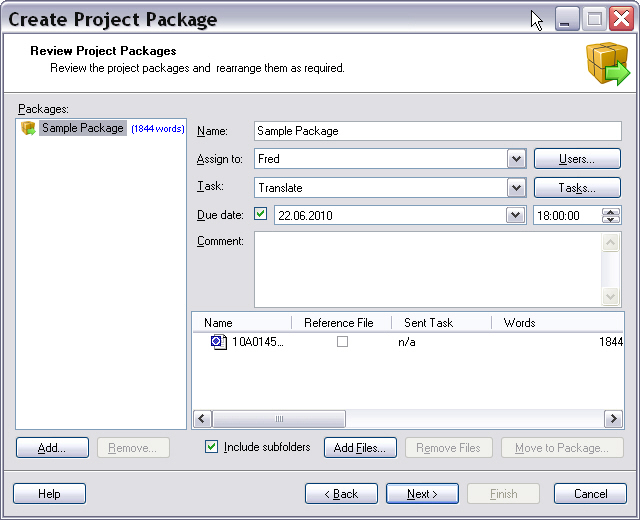
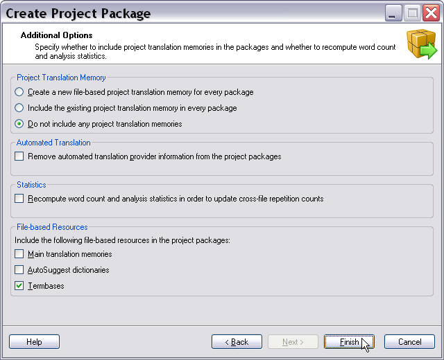

About Packages
This section explains how packages are used in order to send around project files and related information to other participants in a localization project (e.g. from project managers to translators).
Overview
The initial phase of a localization project typically consists of a number of automatic steps in which the project files are prepared for translation. When this process is completed, the files will be present in SDLXliff format, with all available translation leverage applied. At this point, they are ready to be translated.
Since the person who prepares the project will typically not be the person who translates and reviews the files, the project files will have to be sent to the translator, who will perform the actual translation work. As explained in About Tasks, a human step in the workflow, like translation, is represented by a manual task.
In case of a server-based system, these manual tasks can just be assigned to a user, who then works on the translation online in an online translation editor. In case of a desktop-based system, where no central server is available, or if the user does not want to use the online translation editor, the project files and the necessary information to perform the manual task can be packaged into a project package.
A project package is essentially a zip file containing an XML manifest file, describing its contents, plus the project files that are part of the manual task. For more information on the contents of a project package, see project packages.
When the task assignee receives the project package, it can be opened in Trados Studio in order to perform the manual task. When opening a project package in Trados Studio, the contents of the package are extracted, and a Trados Studio project is created based on the system of the assignee. Except for the fact that this project was created by opening a package rather than through the Create Project Wizard, it is standard Trados Studio project, i.e. the same functionality is available as for a 'normal' project, which was created in the New Project wizard.
After performing the manual task, for instance by translating the project files in the Trados Studio translation editor, the user selects the translated files and creates a return package in order to send the translated or edited files back. Like a project package, a return package is a ZIP file containing an XML manifest file and the translated project files. For more information on the contents of return packages, see return packages.
When the task assigner receives and opens the return package, the project from which the package originated is identified and the translated files are added to that project.
When a user receives a package containing a manual task from somewhere, the user has two options:
- Centralized scenario: The user works on the task, completes it, and returns the result as a return package.
- Collaborative scenario: The user works on the task, completes it, and creates a new project package for the next person in the project life cycle.
Centralized Scenario
For example:
- The project manager assigns a translate task to a translator
- The translator completes the translate task and returns the translated files to the project manager
- The project manager now assigns a review task to a reviewer, who subsequently returns the reviewed files to the project manager.
Collaborative Scenario
For example:
- The project manager assigns a translate task to a translator.
- The translator completes the translate task and then assigns a review task to a reviewer, rather than sending the translate task results back to the project manager.
- When the reviewer completes the review task, he/she returns the reviewed files directly back to the project manager.
When creating a return package, the system is flexible when it comes to the files to include in that return package. The return package does not necessarily need to contain the exact same set of files that was received in the project package. The user can create partial return packages as and when required, and can also combine files received through multiple project packages in a single return package. The only limitation is the fact that all files in a return package need to belong to the same project.
Project Packages
A project package contains the following information:
- A single manual task.
- The files that belong to this manual task.
- All project information related to the project the manual task belongs to, including:
- Project translation memories (optional) and/or links to the main translation memories.
- Termbases
- AutoSuggest dictionaries.
Return Packages
A return package contains the following information:
- The manual tasks for which the return package contains files.
- The files selected by the user to include.
A return package does not contain any translation memories. The translated files contained in the return package are generally used to update the main and/or project translation memories.
API Overview
There are two parts of Project API related to working with packages, serving two main scenarios:
- Working with packages within the context of a Project API-based project: The Project Automation API provides a high-level API for creating and opening packages within the context of a project. See High-level API.
- Working with packages outside of the context of a Project API-based project: You can manipulate packages independently of a Project API-based project using the Low-level Package API
High-level Package API
When you have an existing Project API-based project, you can create packages from this project using the high-level package functionality integrated into the Project Automation API. The Project Automation API provides the following package-related functionality:
- To create a project package from a manual task in an existing project, see CreateProjectPackage.
- To import a project package into an existing system, see ImportProjectPackage.
- To create a return package from a number of task files in an existing project: see CreateReturnPackage.
- To import a return package into an existing system, see ImportReturnPackage.
Each of the methods above returns an object that derives from
IPackageOperation. This object represents the package operation and can be used to monitor that operation though events and to access the results when the operation is completed. After calling the above methods and attaching the relevant event handlers, call Start to start the operation. During package import operations, certain situations may result in callbacks being invoked to allow external control of the package import process. An example of such a situation is when the package contains files which are older than the files that already exist in the project. A callback allows the calling code to decide whether the file should be overwritten. When doing a package import through Trados Studio, this results in the user being asked a question. The callback are accessed through theIPackageImportEventsinterface.
Low-level Package API
Note
This part of the package API functionality will significantly change going forward. The idea is to produce a separate package API and package format, which is entirely independent of the Project Automation API and the desktop project file format.
The Project Automation API also provides functionality to create and open packages independently from a Project API-based project. Use this functionality when creating packages containing content originating from external systems or to open packages for other purposes than importing their content into a Project API-based project.
The package functionality is implemented as a special type of desktop project, a package project (see IPackageProject). As a result the API to be used for creating and manipulating package files shares most of its functionality with the API used for creating and manipulating projects.
A package file consists of a zipped up desktop project. The project file contained within this zip file contains some additional information on top of the standard project information.
Note that this API is used under the hood when working with the High-level Package API.

The creation of project packages in Trados Studio is fully wizard-based. Users define the assignee, the due date, the type of manual task to perform, etc.

The screenshot above highlights the various options that are available when creating a project package.